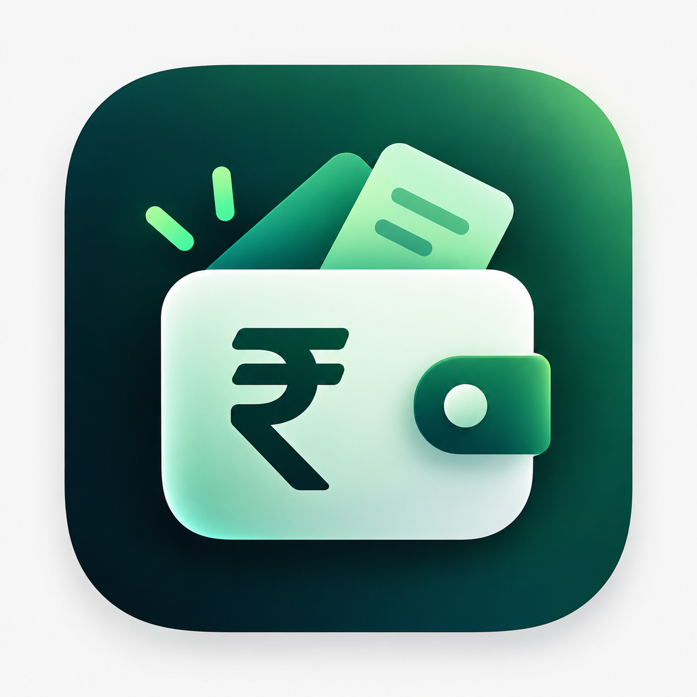

Life does not wait for a spreadsheet.
Add an expense in the Android app, from its widget, or from Quick Settings. The iPhone Shortcut offers a separate route into your own Sheet.

Pocket LedgerPocket Ledger personal expense tracking
Catch the little spends. See what they become. Keep the record on your phone—and send a copy to your own Sheet only when you choose.
There is a story in the small stuff.
Pocket Ledger records expenses as they happen. This illustration uses sample entries to show how a handful of moments becomes a view you can actually read.
Hover, focus, or tap a bar to inspect an expense.
Sample data only. This is an illustration, not your ledger.
Add an expense in the Android app, from its widget, or from Quick Settings. The iPhone Shortcut offers a separate route into your own Sheet.
On Android, review your ledger by period or category. Search and filters make the small entries useful after the moment has passed.
The Android app keeps its primary ledger on your device. It works offline without a Sheet. A Google Sheet can be your second copy, sent when you choose to sync.
Nothing leaves the Android app in the background.
Start with the Android app, set up the iPhone Shortcut, or prepare a Sheet that belongs to you.
Record offline, tag Needs and Wants, and connect your Sheet later. Installs separately from V2; export a JSON backup before migrating.
Install the supplied Apple Shortcut and connect it to your own Sheet and Apps Script URL.
Copy the template for your device. The Android and iPhone/V1 templates are different.
Eight quick pages for Android: expenses, Need / Want, widgets, your Sheet, backup and restore.